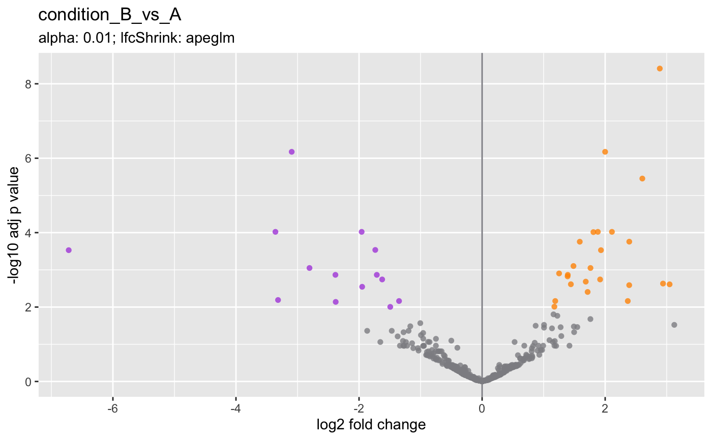
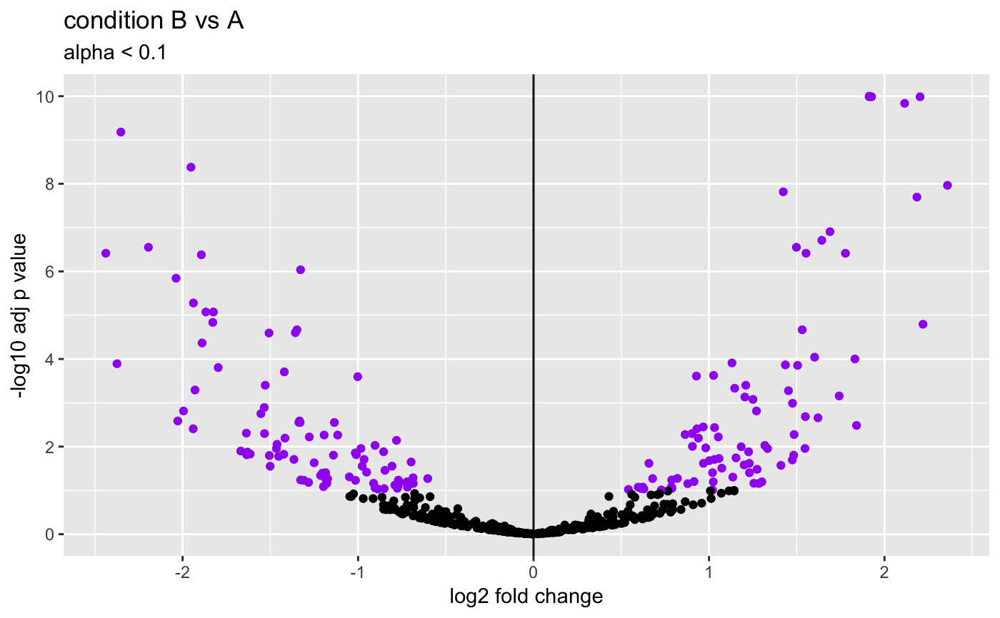
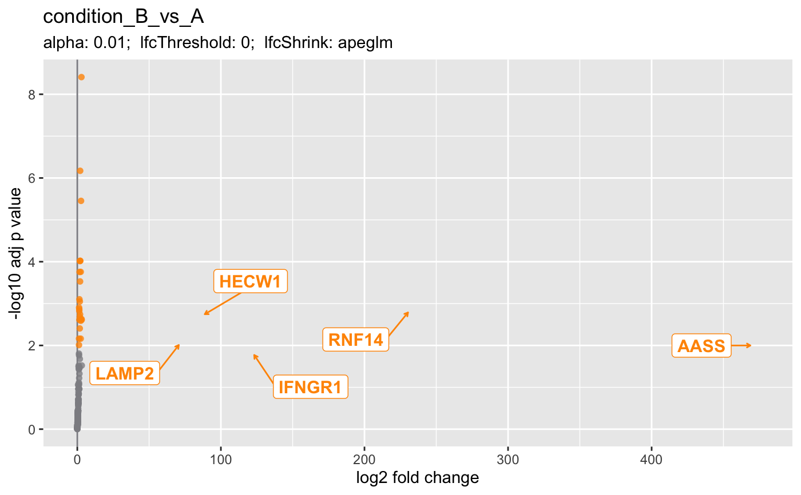
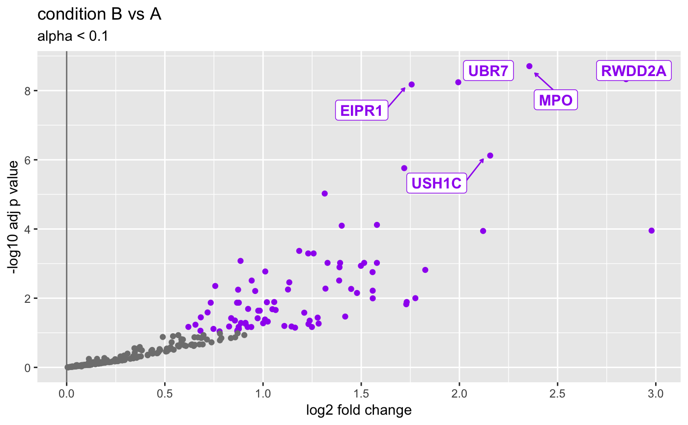
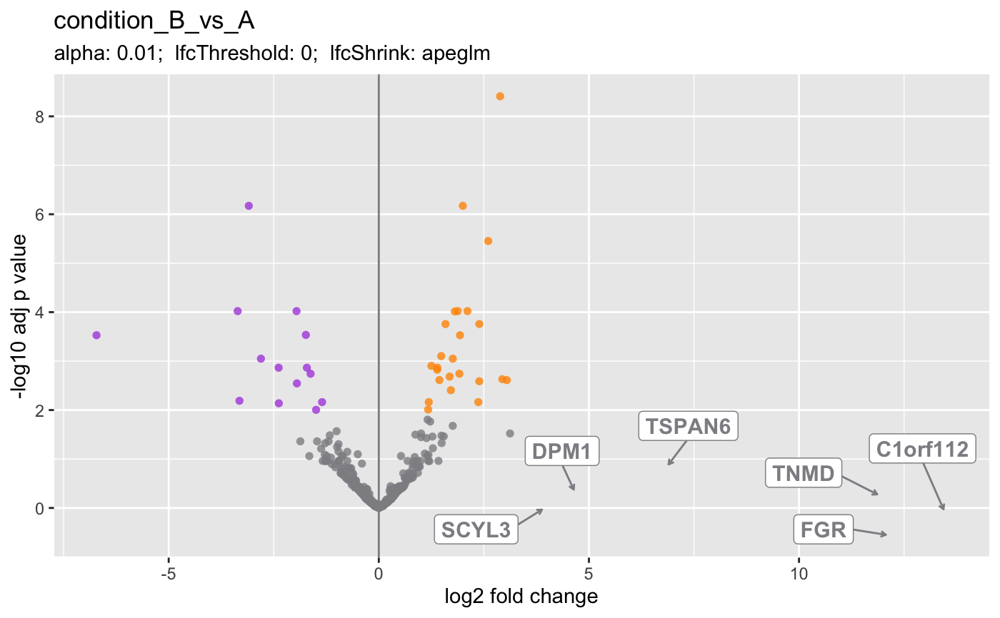

Volcano plot
plotVolcano(object, ...) # S4 method for DESeqResults plotVolcano( object, alphaThreshold = NULL, lfcThreshold = NULL, baseMeanThreshold = NULL, genes = NULL, gene2symbol = NULL, ntop = 0L, direction = c("both", "up", "down"), pointColor = c(downregulated = acidplots::lightPalette[["purple"]], upregulated = acidplots::lightPalette[["orange"]], nonsignificant = acidplots::lightPalette[["gray"]]), pointSize = 2L, pointAlpha = 0.8, ylim = 1e-10, histograms = FALSE, return = c("ggplot", "DataFrame") ) # S4 method for DESeqAnalysis plotVolcano(object, i, ...)
| object | Object. |
|---|---|
| alphaThreshold |
|
| lfcThreshold |
|
| baseMeanThreshold |
|
| genes |
|
| gene2symbol |
|
| ntop |
|
| direction |
|
| pointColor |
|
| pointSize |
|
| pointAlpha |
|
| ylim |
|
| histograms |
|
| return |
|
| i | Indices specifying elements to extract or replace. Indices are For more information: help(topic = "Extract", package = "base") |
| ... | Additional arguments. |
ggplot.
plotVolcano,DESeqAnalysis-method: Passes to DESeqResults method, with gene2symbol
argument automatically defined.
Updated 2020-08-05.
CHBUtils::volcano_density_plot().
Michael Steinbaugh, John Hutchinson, Lorena Pantano
data(deseq) ## Get genes from DESeqDataSet. dds <- as(deseq, "DESeqDataSet") genes <- head(rownames(dds)) print(genes)#> [1] "gene001" "gene002" "gene003" "gene004" "gene005" "gene006"## DESeqAnalysis ==== plotVolcano(deseq, i = 1L)#>## Customize the colors. plotVolcano( object = deseq, i = 1L, pointColor = c( downregulated = "red", nonsignificant = "black", upregulated = "green" ) )#> ℹ condition_B_vs_A (shrunken LFC)## Directional support (up or down). plotVolcano( object = deseq, i = 1L, direction = "up", ntop = 5L )#> ℹ condition_B_vs_A (shrunken LFC)plotVolcano( object = deseq, i = 1L, direction = "down", ntop = 5L )#> ℹ condition_B_vs_A (shrunken LFC)## Label genes manually. ## Note that either gene IDs or names (symbols) are supported. plotVolcano(deseq, i = 1L, genes = genes)#> ℹ condition_B_vs_A (shrunken LFC)